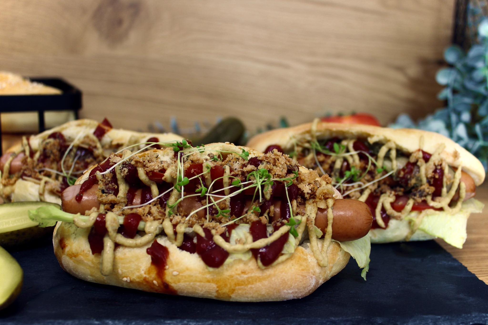

Domowy hot-dog
Składniki:
PRZEPIS:
Na zaczyn:
🌭100g mąki pszennej
🌭25g świeżych drożdży
🌭150g mleka
Na ciasto właściwe:
🌭400g mąki pszennej
🌭200g mleka
🌭50g miękkiego masła
🌭1 łyżeczka soli
Dodatkowo:
- Jajko do posmarowania
- Sezam do posypania

Zaczynamy od przygotowania zaczynu. Ciepłe, ale nie gorące mleko łączymy z pokruszonymi drożdżami oraz mąką. Dokładnie mieszamy i odstawiamy do wyrośnięcia na 30 minut. Mąkę, zaczyn drożdżowy, sól oraz mleko wyrabiamy do uzyskania jednolitego ciasta.
Na koniec dodajemy miękkie masło i wyrabiamy aż masło połączy się z ciastem.Przykrywamy ściereczką i pozostawiamy do wyrośnięcia na minimum 1 godzinę. Wyrośnięte ciasto dzielimy na 8 części i formujemy bułeczki. Pozostawiamy je na kolejne 30 minut
do odpoczęcia i wyrośnięcia. Piekarnik nagrzewamy do 200°C Bułeczki smarujemy rozbełtanym jajkiem, posypujemy sezamem i wkładamy do piekarnika Pieczemy przez 20 minut, aż bułeczki pięknie się zarumienią. Z takich bułeczek możemy przygotować domowe
hot-dogi lub też podać jako bułeczki śniadaniowe. Są idealnie puszyste i mięciutkie w środku. SMACZNEGO!